USM RoboSub
RoboSub is an international competition where student teams build autonomous underwater vehicles that complete tasks on their own. I'm the hardware lead for our team at USM.
How it started
Before we had an AUV, our team built a SeaPerch, a small ROV with a PVC frame. It taught us the basics of thrusters, buoyancy and keeping electronics dry. After that we decided to build a real autonomous vehicle and take it to RoboSub.
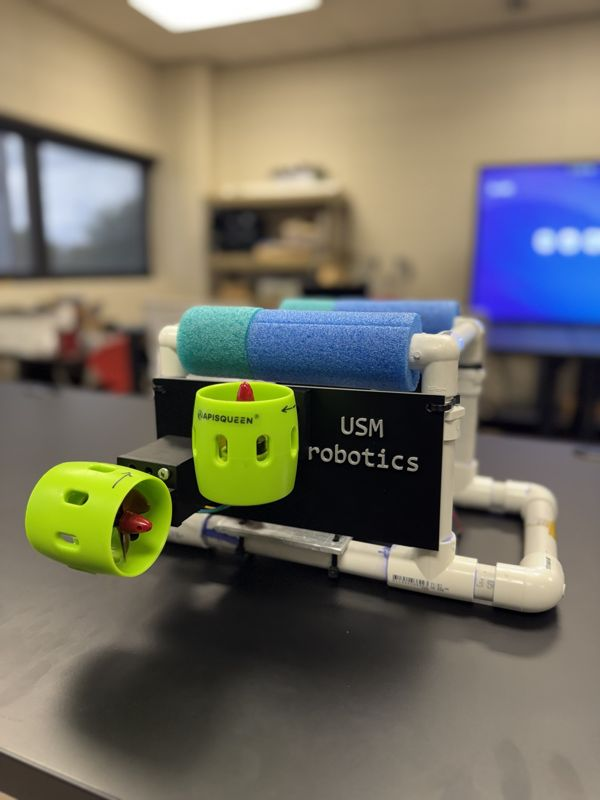
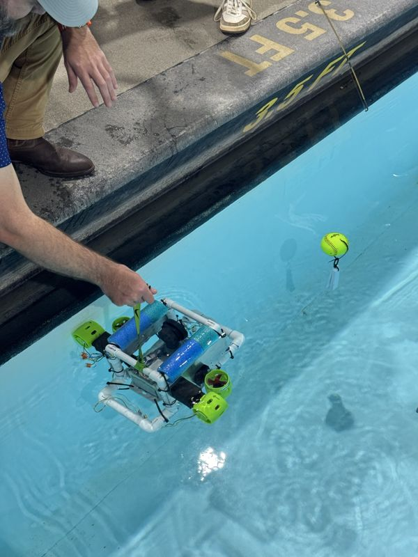
- Start: SeaPerch ROV, our first underwater build
- July 2026: RoboSub semifinals as the first Mississippi team to compete
- Now: MARV 2.0, our vehicle for RoboSub 2027
MARV 2.0
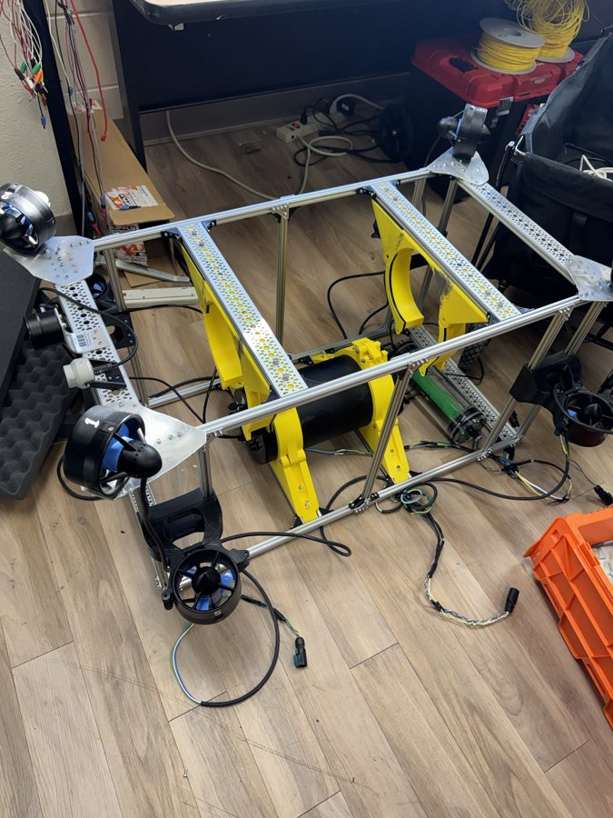
After our first RoboSub in 2026, I started designing the sub for 2027. I modeled the whole vehicle in Fusion 360, 3D printed a 60% scale version, and pitched it to the team as the base for our next build.
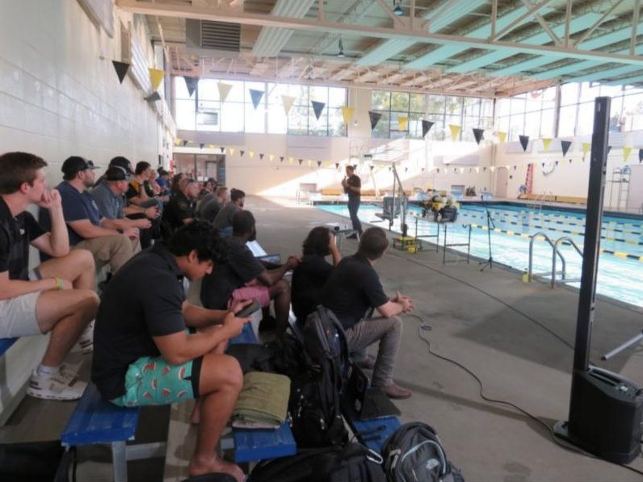
The parts I'm responsible for:
- The main electronics tray that holds the Jetson, power board, ESCs and ZED camera (I'm designing this now), then the battery tray
- Waterproof pass-throughs and bulkhead penetrators
- A ballast system built around a pressure accumulator, the same kind used under a kitchen sink
- Torpedo dropper and launcher mechanisms
- Battery selection (6S LiPo) and power distribution
- Field testing sonar and camera data collection
The vehicle we brought to competition in July 2026 ran without sonar or the ZED stereo camera. We started adding both after RoboSub and are testing them now.
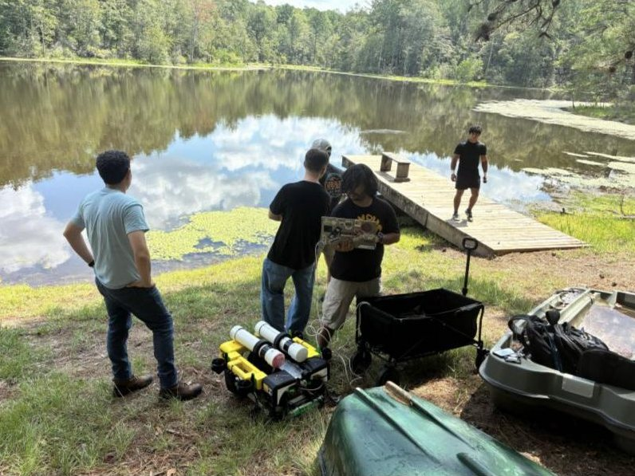
At RoboSub 2026 our team qualified and made it to the semifinals. Blue Robotics also awarded us two T200 thrusters with ESCs.
Tools: Fusion 360, 3D printing, Jetson, ZED stereo camera, sonar, Blue Robotics T200 and ESC, ROS 2
Quick-release hull clamp
Last season we held the main hull with the same screw-down clamps people use for nitrous bottles in cars. Every time we needed to get inside the sub, someone had to back a long screw out of a nut. Taking the hull out and putting it back took 5 to 10 minutes, and we needed tools every time.
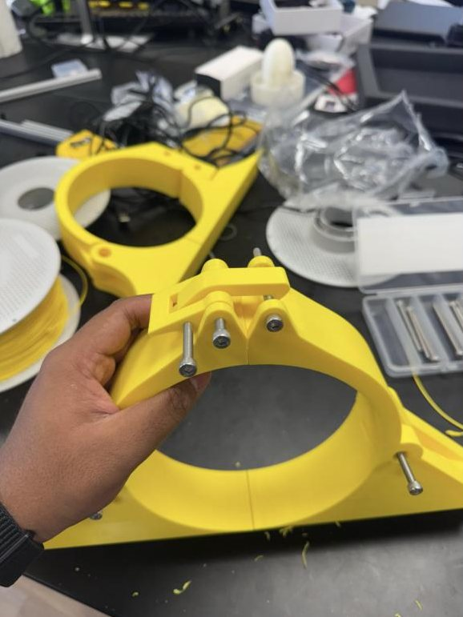
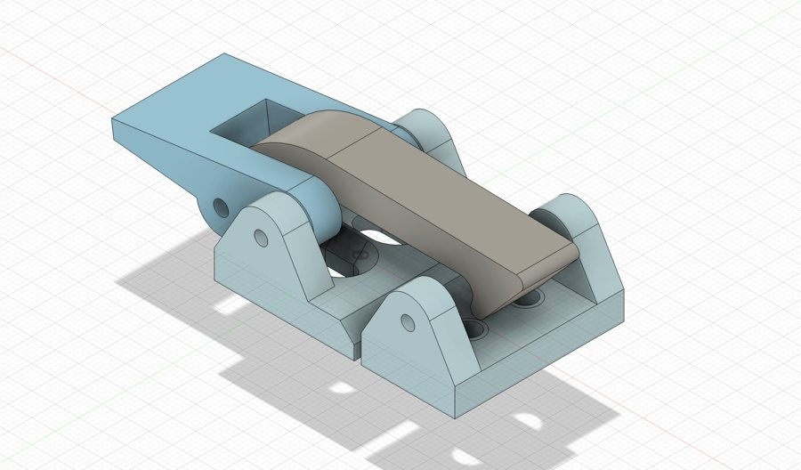
What didn't work
My early prints were either too loose or too tight. I tried making the main clamp piece adjustable forward and back, but that didn't fix the fit.
What I changed
I made the clamp one solid piece instead of several parts screwed together. It carries real load, and if it failed the whole robot would drop. I made the main body thicker, then went through several latch designs around it until one held.
Result
The clamp now latches and releases by hand, and it's in use on the AUV. Next I want to replace the latch with a metal one so it doesn't wear down over time.
Tools: Fusion 360, FDM printing, designing for load, iterative prototyping
What didn't work: our own hull
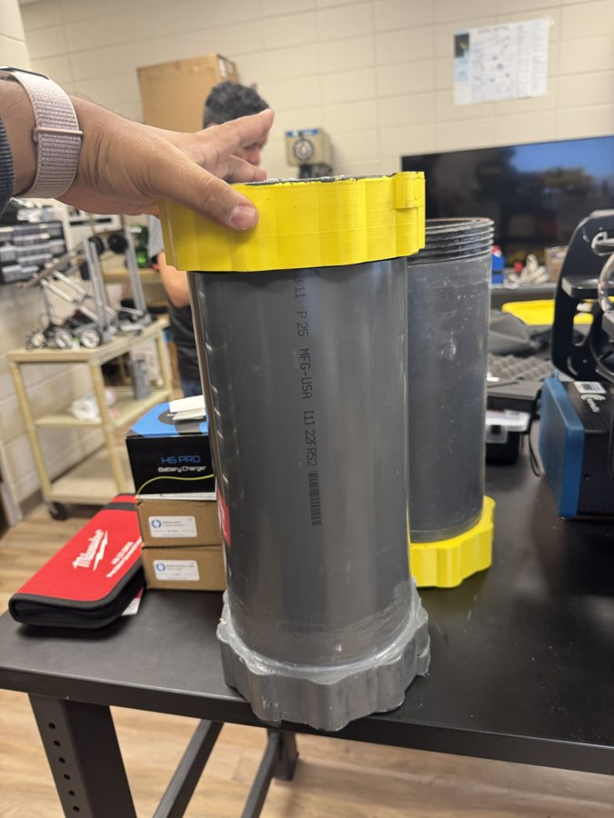
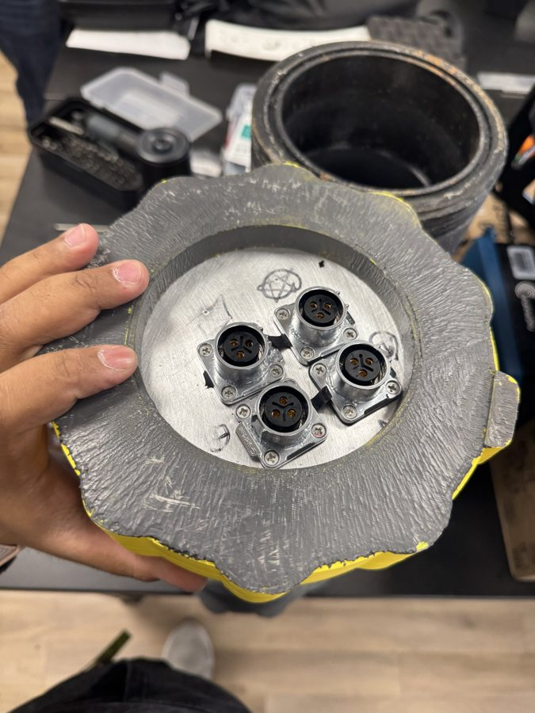
Before we bought a Blue Robotics enclosure, we tried building our own hull. It worked for a while, but even with every part finished, something was always slightly off and it never became fully reliable. It also wasn't modular, so opening it to work on the electronics was slow and awkward.
We switched to a Blue Robotics hull, and I presented what we learned from the attempt to the RoboSub judges at competition. The main lesson for me: on a vehicle we open dozens of times a season, being easy to service matters as much as whether it seals.
Other parts I designed for the AUV
Adjustable corner thruster mounts
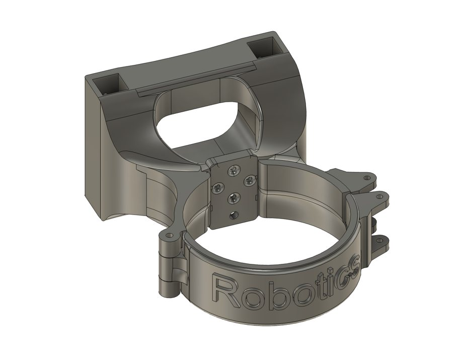
These mounts slide up and down the four corner poles of the frame and tighten in place. That lets us move each thruster wherever it works best for balance and control, instead of being stuck with fixed holes.
Tools: Fusion 360, 3D printing, frame design
Torpedo launcher and dropper
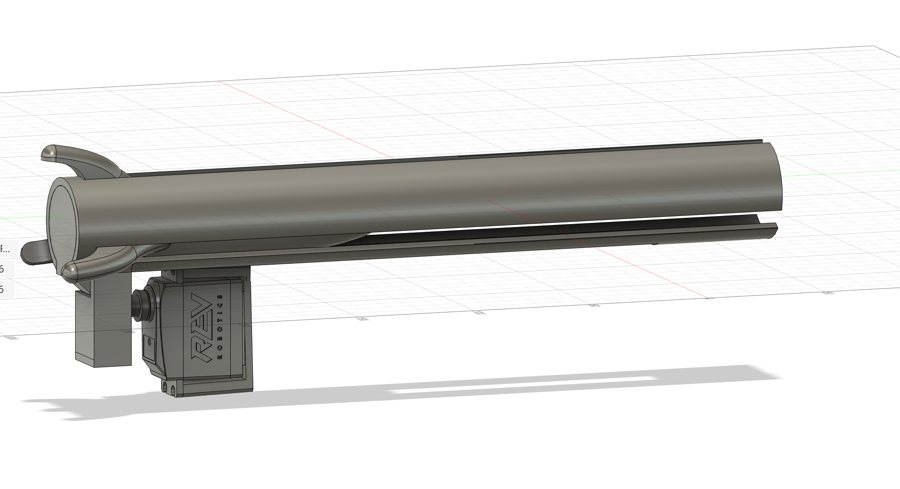
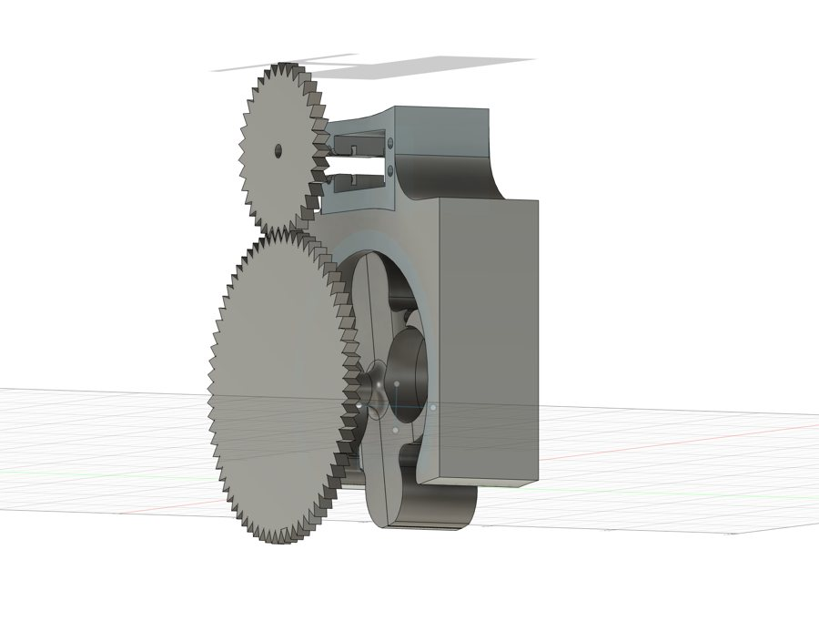
I designed and built prototypes of a torpedo dropper and a launcher. The launcher uses a capacitor and a small propeller so the torpedo travels straight for a short distance. Both are still prototypes and we'll change them if we find a better approach. I've handed them to teammates to keep developing while I focus on the hull and trays.
Tools: Fusion 360, capacitor launch, prototyping
Power distribution board (planned)
This comes after the electronics and battery trays. I'm researching the design now before starting the layout in KiCad. The plan:
- Battery power comes in on an XT60 connector, through a fuse and a MOSFET for reverse-polarity protection
- From there it goes to two regulator modules that mount on the board
- The competition magnetic kill switch cuts power to the ESCs and thrusters only, so the Jetson and sensors stay on
- A boot-button connector goes to the Jetson
Tools: KiCad, XT60, reverse-polarity protection, kill switch
Leading the hardware team
I lead about 10 people on hardware. I take on the core vehicle work myself, since I went through every problem we hit at last year's competition and can design around them. Teammates own other systems, like the torpedo launcher and dropper, and I keep everyone updated on the hull and tray designs so they understand how they work.
A lot of our members are new to hardware and want to help, so a big part of my job is teaching the basics as we build. The goal is for the whole team to get better, not just the vehicle.
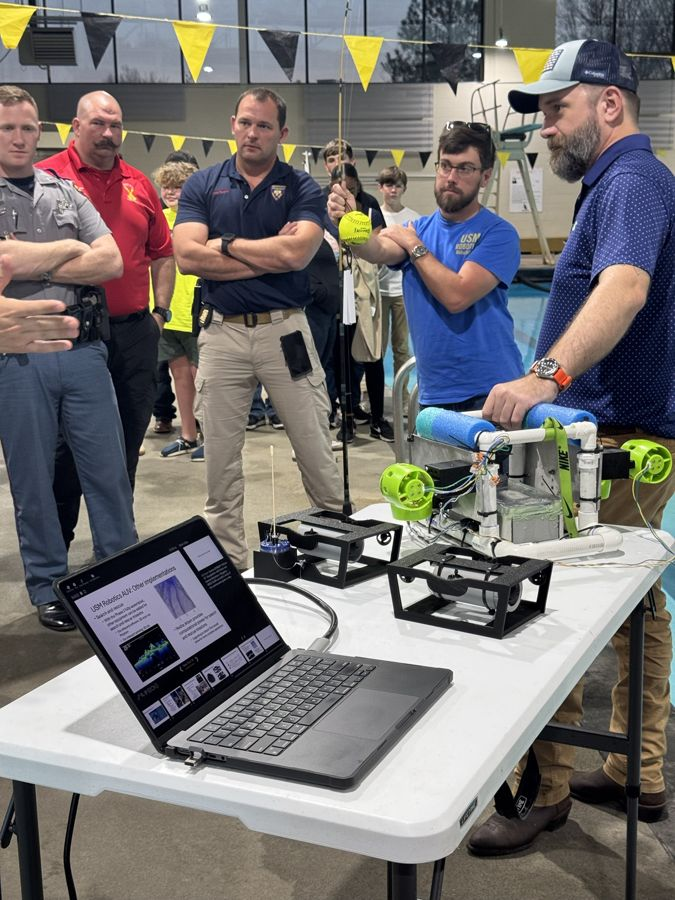
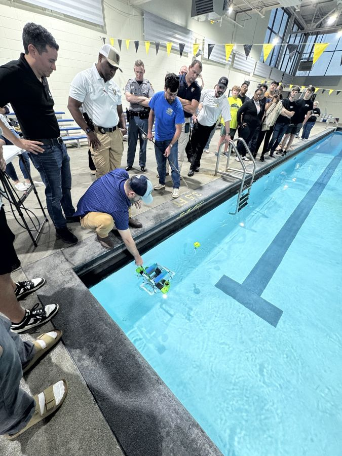
Events and outreach
- RoboSub 2026, where I presented our custom hull work to the judges
- Our September MARV demo for local law enforcement, first responders and K–12 students
- Demos at the Infinity Science Center to get high school students interested in robotics
- Gulf Blue events, including a conversation with Near Space Labs about turning aerial imagery into high-resolution maps
- Demos of our vision work and the story of our first competition